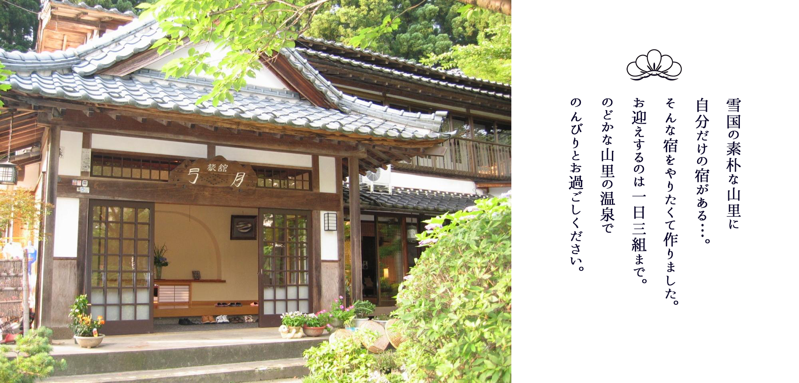
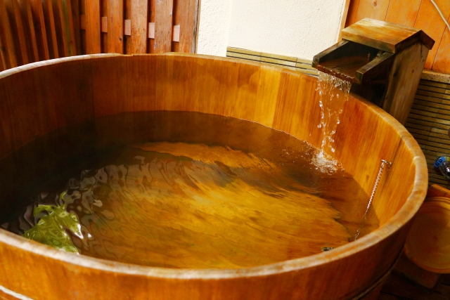

新潟県五頭温泉郷出湯温泉。
「雪国の素朴な山里に自分だけの隠れ家ある…。」
そんな宿をやりたくてつくりました。
まだまだ未熟な宿ですが、小さな宿ならではの寛ぎを求めてがんばっています。
おふたりで，御家族，お友達同士でたいせつな人と
「こころのコリ」をほぐしに来てください。

玄関を入ると築１２０年の地元の古民家を改装した母屋に畳ラウンジがあります。 佐渡の船箪笥、李朝家具をアクセントに、 木のぬくもりをたいせつにしています。 遠い田舎の親戚を訪ねたような気やすさを感じていただけたら…うれしいです。
せっかく訪ねていただいたのだから、出きる限りのんびり
お過ごし頂きたい配慮からお迎えするお客様は１日３組まで。
ご宿泊いただく３室が，露天風呂付きの客室。

のどかな山里の田舎の温泉でのんびりとおすごしください。 お食事は専用の個室またはお部屋だしにてごゆっくりお召し上がりいただけます。 また毎朝お客様に温泉でコーヒーを煎れています。 お部屋にお持ちになっても良し、庭先の廊下のイスでのんびりとされるのも良し、 休日の朝をゆったりとお過ごしください。